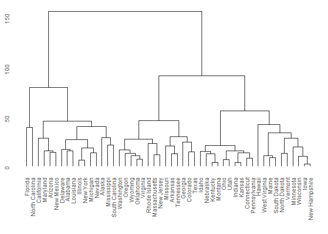

Provides functions for creating dendrograms and tree plots using ggplot2.
The ggdendro package offers a generic function to extract data and text from the various clustering models:
-
dendro_data()extracts cluster information from the model object, e.g. cluster allocation, line segment data or label data.
The dendro_data object has methods for the following classes:
treehclustdendrogramrpart
These methods create an object of class dendro, which is essentially a list of data frames. To extract the relevant data frames from the list, use the three accessor functions:
-
segment()for the line segment data -
label()for the text for each end segment -
leaf_label()for the leaf labels of a tree diagram
The results of these functions can then be passed to ggplot() for plotting.
Examples
library(ggplot2)
library(ggdendro)
hc <- hclust(dist(USArrests), "ave")
hcdata <- dendro_data(hc, type = "rectangle")
ggplot() +
geom_segment(data = segment(hcdata),
aes(x = x, y = y, xend = xend, yend = yend)
) +
geom_text(data = label(hcdata),
aes(x = x, y = y, label = label, hjust = 0),
size = 3
) +
coord_flip() +
scale_y_reverse(expand = c(0.2, 0))
### demonstrate plotting directly from object class hclust
ggdendrogram(hc)
ggdendrogram(hc, rotate = TRUE)
### demonstrate converting hclust to dendro using dendro_data first
hcdata <- dendro_data(hc)
ggdendrogram(hcdata, rotate = TRUE) +
labs(title = "Dendrogram in ggplot2")
Use dendextend instead
Most of the functionality in ggdendro is included in the excellent dendextend package. In most cases, if you need additional functionality, please use the dendextend package instead.
The ggdendro package will only get minimal maintenance in future.
Refer to https://cran.r-project.org/web/packages/dendextend/index.html